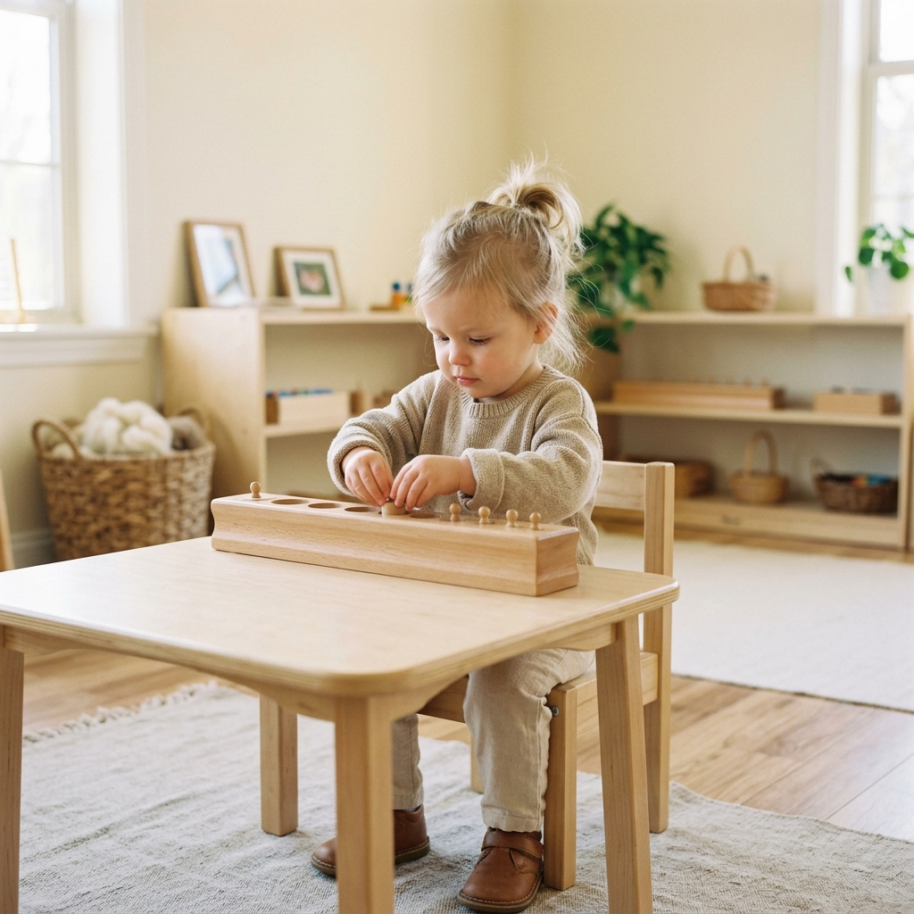
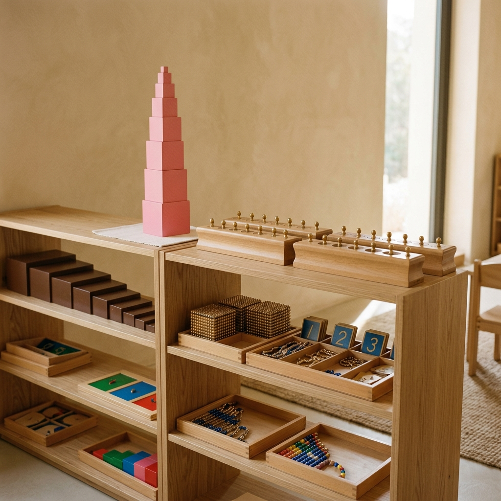

Since 2002.
For over 20 years, we've had the joy of supporting hundreds of children and their families in Croydon. Our experienced team and authentic approach are at the heart of everything we do.
Read our story →The Ark Montessori Nursery is an authentic Montessori nursery in Croydon for children aged 24 months to 5 years.

Our carefully prepared environment and hands-on materials nurture independence, concentration and a lifelong love of learning.
Learn more about our approach →



Every detail of our nursery is intentionally designed to help children feel calm, focused and free to explore. Natural materials, light-filled rooms and a love of order create the perfect place to grow.
Take a look inside our nursery →For over 20 years, we've had the joy of supporting hundreds of children and their families in Croydon. Our experienced team and authentic approach are at the heart of everything we do.
Read our story → 2002
2002


"The Ark has been such a special place for our daughter. She is happy, confident and loves coming every day."
We offer a range of flexible options and accept 15 & 30 hours funding.
Find out about our registration process and next steps.
Come and see The Ark for yourself. We'd love to show you around.
Discover a typical day in our Montessori environment.
Questions? We're here to help.
Book a visit to our nursery in Croydon. We can't wait to meet you.